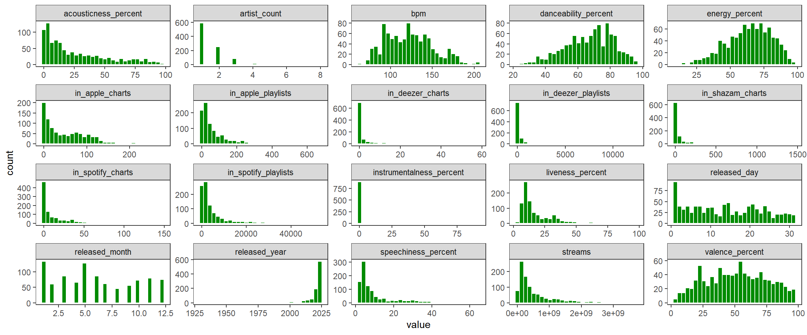
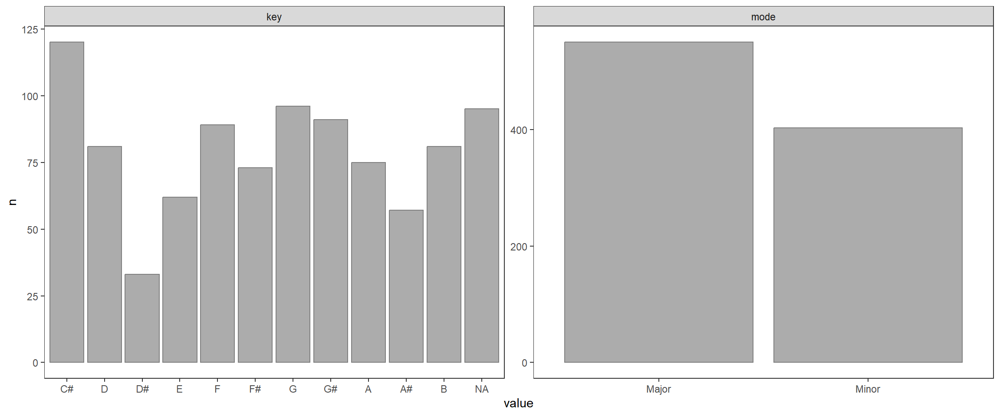

Spotify 2023: Análise das músicas mais populares
Introdução
Setup
Conjunto de Dados
This dataset contains a comprehensive list of the most famous songs of 2023 as listed on Spotify. The dataset offers a wealth of features beyond what is typically available in similar datasets. It provides insights into each song’s attributes, popularity, and presence on various music platforms. The dataset includes information such as track name, artist(s) name, release date, Spotify playlists and charts, streaming statistics, Apple Music presence, Deezer presence, Shazam charts, and various audio features. - Fonte: https://www.kaggle.com/datasets/nelgiriyewithana/top-spotify-songs-2023
Código
# carregando o conjunto de dados
# disponivel em: https://www.kaggle.com/datasets/nelgiriyewithana/top-spotify-songs-2023
dados <-
readr::read_csv('spotify-2023.csv') %>%
janitor::clean_names()
dados %>% head(30)Código
bind_rows(
dados %>% enoqueR::overall_info(),
dados %>% enoqueR::overall_tipos()
)O conjunto de dados apresenta um total de 24 colunas, 955 observações e ausência de linhas duplicadas. Dentre as 24 colunas, 19 são numéricas e 5 são de caractere.
Rows: 953
Columns: 24
$ track_name <chr> "Seven (feat. Latto) (Explicit Ver.)", "LALA"…
$ artist_s_name <chr> "Latto, Jung Kook", "Myke Towers", "Olivia Ro…
$ artist_count <dbl> 2, 1, 1, 1, 1, 2, 2, 1, 1, 2, 2, 1, 1, 1, 1, …
$ released_year <dbl> 2023, 2023, 2023, 2019, 2023, 2023, 2023, 202…
$ released_month <dbl> 7, 3, 6, 8, 5, 6, 3, 7, 5, 3, 4, 7, 1, 4, 3, …
$ released_day <dbl> 14, 23, 30, 23, 18, 1, 16, 7, 15, 17, 17, 7, …
$ in_spotify_playlists <dbl> 553, 1474, 1397, 7858, 3133, 2186, 3090, 714,…
$ in_spotify_charts <dbl> 147, 48, 113, 100, 50, 91, 50, 43, 83, 44, 40…
$ streams <dbl> 141381703, 133716286, 140003974, 800840817, 3…
$ in_apple_playlists <dbl> 43, 48, 94, 116, 84, 67, 34, 25, 60, 49, 41, …
$ in_apple_charts <dbl> 263, 126, 207, 207, 133, 213, 222, 89, 210, 1…
$ in_deezer_playlists <dbl> 45, 58, 91, 125, 87, 88, 43, 30, 48, 66, 54, …
$ in_deezer_charts <dbl> 10, 14, 14, 12, 15, 17, 13, 13, 11, 13, 12, 5…
$ in_shazam_charts <dbl> 826, 382, 949, 548, 425, 946, 418, 194, 953, …
$ bpm <dbl> 125, 92, 138, 170, 144, 141, 148, 100, 130, 1…
$ key <chr> "B", "C#", "F", "A", "A", "C#", "F", "F", "C#…
$ mode <chr> "Major", "Major", "Major", "Major", "Minor", …
$ danceability_percent <dbl> 80, 71, 51, 55, 65, 92, 67, 67, 85, 81, 57, 7…
$ valence_percent <dbl> 89, 61, 32, 58, 23, 66, 83, 26, 22, 56, 56, 5…
$ energy_percent <dbl> 83, 74, 53, 72, 80, 58, 76, 71, 62, 48, 72, 8…
$ acousticness_percent <dbl> 31, 7, 17, 11, 14, 19, 48, 37, 12, 21, 23, 18…
$ instrumentalness_percent <dbl> 0, 0, 0, 0, 63, 0, 0, 0, 0, 0, 0, 0, 0, 0, 0,…
$ liveness_percent <dbl> 8, 10, 31, 11, 11, 8, 8, 11, 28, 8, 27, 15, 3…
$ speechiness_percent <dbl> 4, 4, 6, 15, 6, 24, 3, 4, 9, 33, 5, 7, 7, 3, …streamsaparece como variável character apesar de apresentar observações numéricas e parece representar uma contagemUma inspeção nas observações da variável
streamsrevelou uma observação contendo um possivel erro de nessa observação. Tal erro foi subtituido por um valor ausente e então os dados foram importados novamente.
Código
dados %>%
enoqueR::dataset_var_info() %>%
as_tibble() %>%
arrange(tipo, n_distinct) %>%
gt() %>%
fmt_number(columns = 6:7)| variavel | tipo | n | n_miss | n_distinct | w | p |
|---|---|---|---|---|---|---|
| mode | character | 953 | 0 | 2 | NA | NA |
| key | character | 858 | 95 | 12 | NA | NA |
| artist_s_name | character | 953 | 0 | 645 | NA | NA |
| track_name | character | 953 | 0 | 943 | NA | NA |
| artist_count | numeric | 953 | 0 | 8 | 0.64 | 0.00 |
| released_month | numeric | 953 | 0 | 12 | 0.93 | 0.00 |
| released_day | numeric | 953 | 0 | 31 | 0.94 | 0.00 |
| in_deezer_charts | numeric | 953 | 0 | 34 | 0.50 | 0.00 |
| instrumentalness_percent | numeric | 953 | 0 | 39 | 0.19 | 0.00 |
| speechiness_percent | numeric | 953 | 0 | 48 | 0.71 | 0.00 |
| released_year | numeric | 953 | 0 | 50 | 0.43 | 0.00 |
| liveness_percent | numeric | 953 | 0 | 68 | 0.77 | 0.00 |
| danceability_percent | numeric | 953 | 0 | 72 | 0.98 | 0.00 |
| energy_percent | numeric | 953 | 0 | 80 | 0.98 | 0.00 |
| in_spotify_charts | numeric | 953 | 0 | 82 | 0.67 | 0.00 |
| valence_percent | numeric | 953 | 0 | 94 | 0.98 | 0.00 |
| acousticness_percent | numeric | 953 | 0 | 98 | 0.87 | 0.00 |
| bpm | numeric | 953 | 0 | 124 | 0.98 | 0.00 |
| in_apple_charts | numeric | 953 | 0 | 172 | 0.88 | 0.00 |
| in_shazam_charts | numeric | 903 | 50 | 199 | 0.41 | 0.00 |
| in_apple_playlists | numeric | 953 | 0 | 234 | 0.72 | 0.00 |
| in_deezer_playlists | numeric | 953 | 0 | 348 | 0.36 | 0.00 |
| in_spotify_playlists | numeric | 953 | 0 | 879 | 0.62 | 0.00 |
| streams | numeric | 952 | 1 | 949 | 0.76 | 0.00 |
- Nenhuma das varíaveis numéricas apresenta distribuição normal.
- Das 145 celulas vazias Tabela 1 95 se encontram na coluna
keye e 50 na coluna `in_shazam_charts. - A variável
track_namenão é suficiente para servir de nome para as observações (945 != 955). - As colunas
track_name,artist_s_nameestreamsapresentam valores distintos elevados. Deve ser buscar abordar tais colunas como caracteristica de denominação de cada observação. - As demais colunas de caractere (
keyemode) podem ser consideradas fatores - colunas de data podem ser transformadas em uma coluna única
Análise Exploratória
Código
Análise visual univariada
Código
dados %>%
select(where(is.numeric)) %>%
pivot_longer(everything()) %>%
drop_na() %>%
ggplot(aes(x = value)) +
geom_histogram(color = 'white', fill = 'green4') +
facet_wrap(~name, scales = 'free') +
theme_test()
Código
dados %>%
select(where(is.numeric)) %>%
select(starts_with('in_'), contains('percent')) %>%
pivot_longer(everything()) %>%
mutate(tipo = ifelse(str_detect(name, 'percent'), 'song info', 'app info')) %>%
ggplot(aes(x = name, y = value)) +
geom_boxplot(color = 'green4') +
theme_test() +
facet_wrap(~tipo, scales = 'free', ncol = 1) +
coord_flip()
Código
# dados %>%
# select(where(is.factor)) %>%
# names() %>%
# map(.f = function(x){
# tibble("{{x}}" := dados %>% pull({{x}})) %>%
# })Código
dados %>%
mutate(key = factor(key, levels = c("C#", "D","D#","E","F","F#","G","G#","A","A#","B"))) %>%
select(where(is.factor)) %>%
pivot_longer(everything()) %>%
count(name, value) %>%
ggplot(aes(x = value, y = n)) +
geom_col(color = 'gray50', alpha = 0.5) +
facet_wrap(~name, ncol = 2, scales ='free') +
theme_test()
Anláise bidimensional
Código
dados %>%
select(bpm, contains('percent'), starts_with('in')) %>%
drop_na() %>%
cor(method = 'spearman') %>%
as.data.frame() %>%
rownames_to_column(var = "var1") %>%
pivot_longer(-var1, names_to = "var2", values_to = "value") %>%
ggplot(aes(x = var2, y = var1, fill = value, label = round(value, 2))) +
geom_tile() +
theme_minimal() +
scale_fill_gradient2(low = 'blue3', mid = 'lightyellow', high = 'red',midpoint = 0) +
theme(axis.text.x = element_text(angle = 90)) +
labs(fill = 'Spearman') +
geom_text(color = 'black')
- As variáveis relacionadas a contagem de presença das músicas em charts e playlists de diferentes serviços de streaming de música apresentaram correalações positivas que variam ao redor de 0.5 de correlação. in_deezer_playlists & in_spotify_playlists apresentaram a maior correlação positiva (0.84) e acousticness_percent & energy_percent a maior correlação negativa (-0.46).